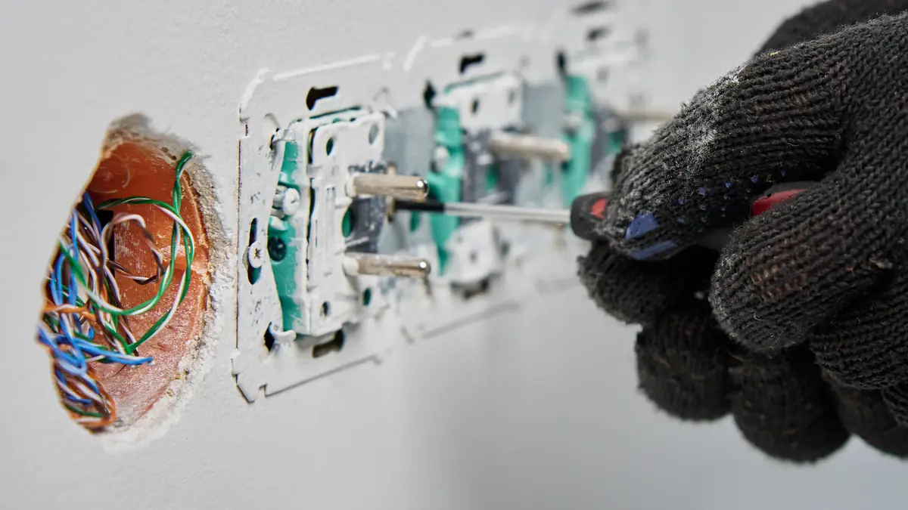

In short
I carry out all kinds of domestic electrical work for homeowners across the Dales and the Lune Valley, from extra sockets and lighting to rewires, fuse box upgrades, EV chargers, CCTV and hardwired data. Every job is tested and, where the job needs one, certified under Part P and the Building Regulations.
Jobs I can help with
- Extra sockets and lights, and moving or replacing existing ones
- Indoor lighting, including downlights and dimmers
- Outdoor and security lighting
- Rewires and partial rewires
- Fuse box (consumer unit) upgrades
- Electric vehicle charging points
- CCTV and security cameras
- Hardwired internet and data points
- Satellite TV cabling
- Smoke, heat and carbon monoxide alarms
- Cooker, hob and shower connections, power for garages and outbuildings, extractor fans and general repairs
Not on the list? Ask. If it's electrical, I can probably help, and if it's something I don't do, I'll tell you straight away.
Electric car charging points
I install home EV chargers. Whoever you choose for this, check that they hold the right qualification for EV charger installation and ask to see it before you book.
Internet, WiFi and TV
I install hardwired internet and data cabling. For mesh WiFi systems I work with a local specialist who sets it all up properly, so you get the right equipment for your home.

How it works
- Tell me what you need. Call, message me on WhatsApp or use the contact form.
- Get a free quote. For simple jobs I can often quote from a description and a few photos. Bigger jobs need a visit.
- The work is done and tested. I test everything before I leave.
- You get the paperwork. Where a job needs a certificate, you'll receive it. My work and any equipment I fit are guaranteed for 12 months.
Is it time for a safety check?
A condition report (EICR) is recommended for your home every 10 years. Landlords need one at least every five years. If yours is due, I can do it and tell you plainly what, if anything, needs doing.
Common questions about domestic electrical work
Do you do small jobs?
Yes. No job is too small, from replacing a socket to adding a new light. Call or send a message and I'll let you know what's involved.
Do I need a certificate for electrical work in my home?
It depends on the job. Larger work such as a new circuit has to be notified to building control, and as a NAPIT registered electrician I can do that for you. Smaller jobs come with their own paperwork, and I'll tell you what you'll receive when I quote.
Can you install an EV charger?
Yes, I install home electric vehicle charging points. If you're choosing an installer, check they hold the right qualification for EV charger installation and ask to see it.
Can you install CCTV, data cabling or WiFi?
Yes to CCTV and hardwired internet and data cabling. For mesh WiFi systems I work with a local specialist who sets it all up.
How often should my home's electrics be checked?
A condition report (EICR) is recommended every 10 years for your own home. Landlords need one at least every five years.
Do you guarantee your work?
Yes. My work, and any equipment I fit, is guaranteed for 12 months.
Can I get a quote without a visit?
Often, yes. For simple jobs I can quote from a description and a few photos sent on WhatsApp. Bigger jobs usually need a visit first.